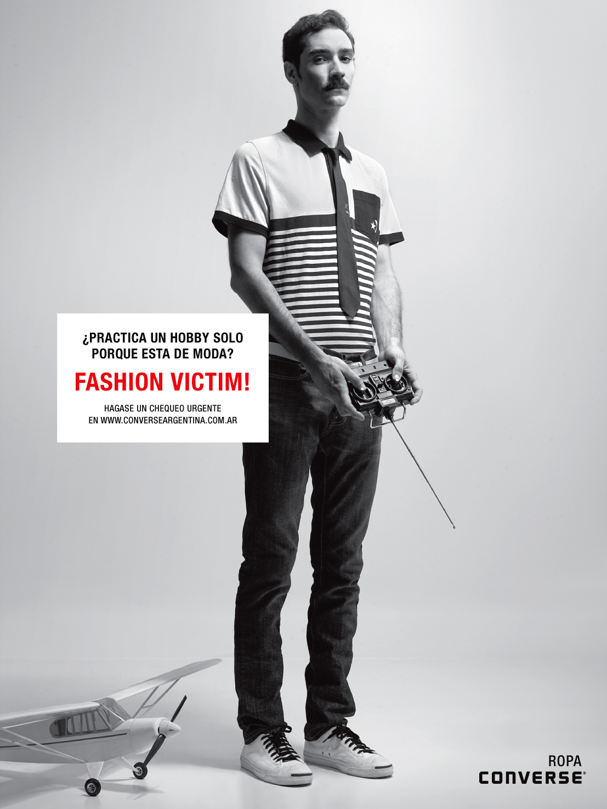
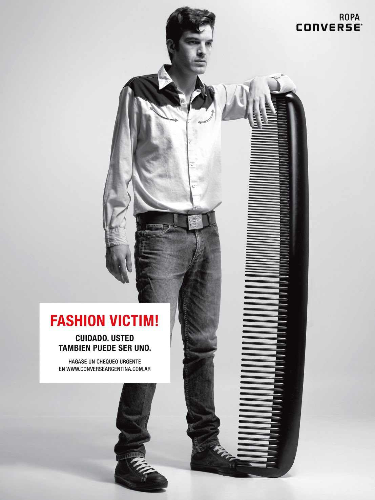
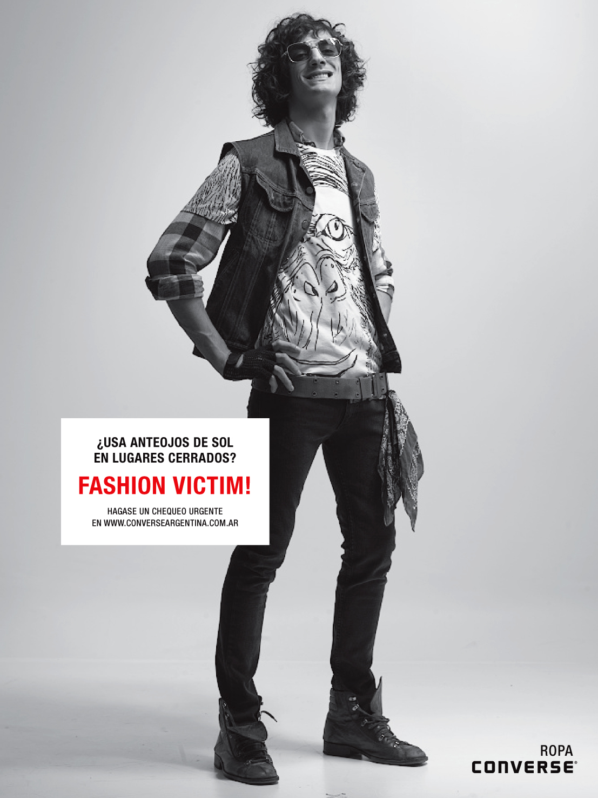
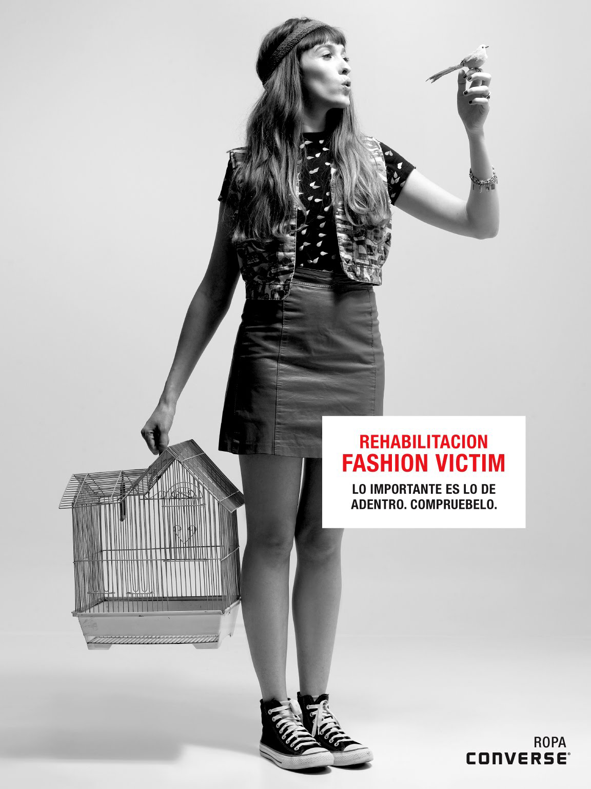
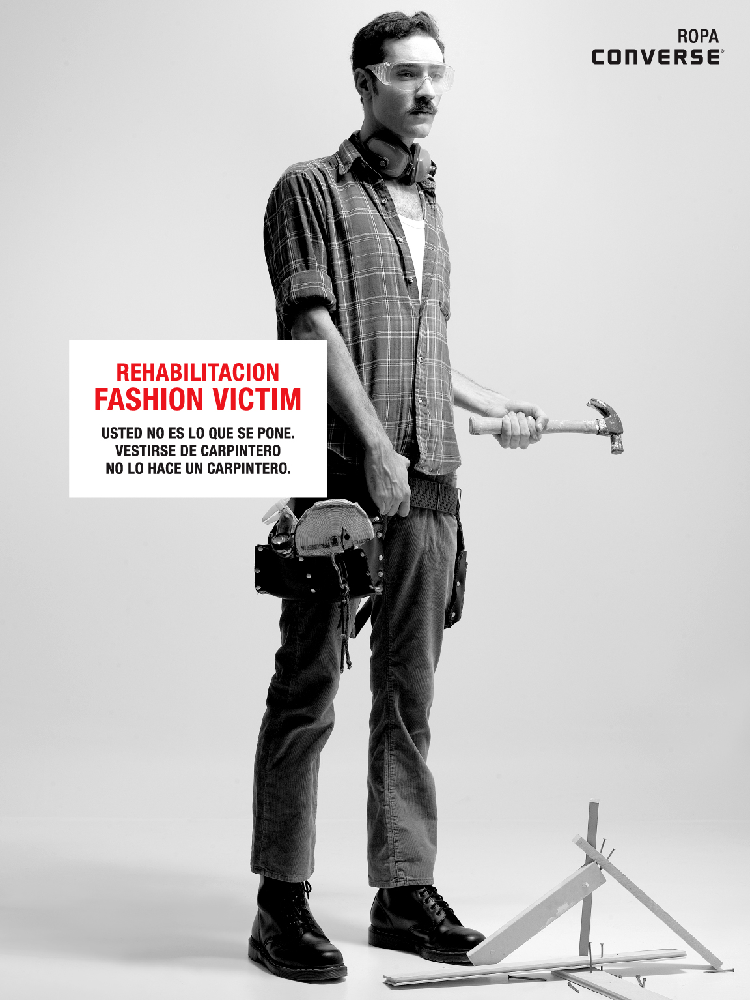
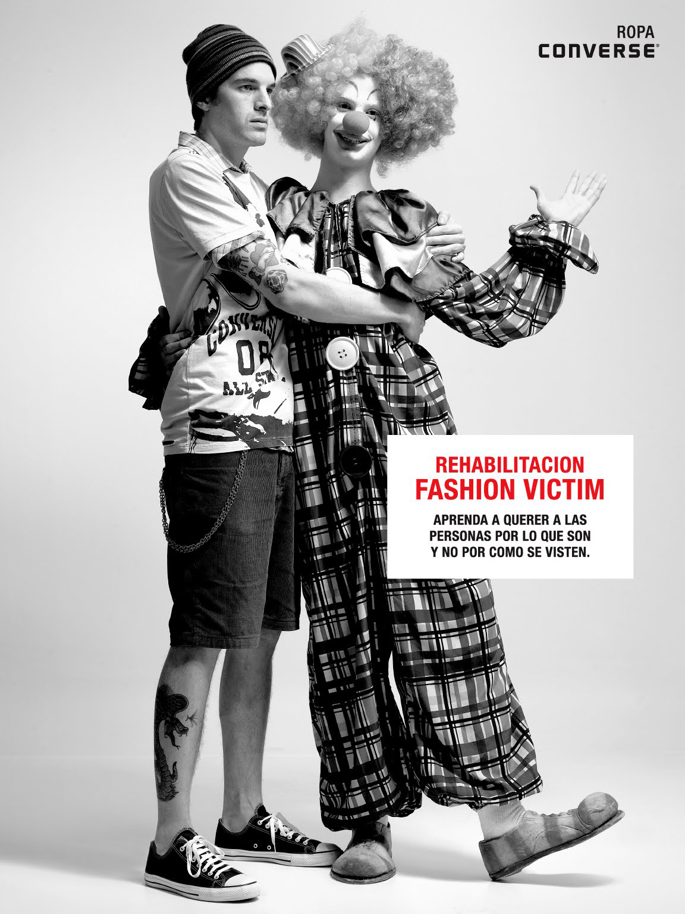

Design for the print campaign launching Converse's apparel collection.
Art Director: Pato Luna Requena
Copywriter: Nicolás Larroquet
Designer: Santiago Fernández
Executive Creative Director: Martín Mercado
Photography: Polo Peluso
Agency: Young & Rubicam Argentina





